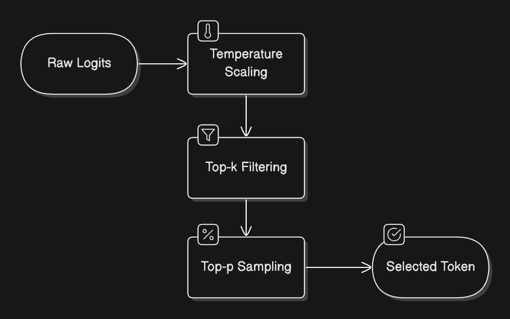

LLM Inference
此文主要介绍大模型推理过程中的步骤
推理的两阶段：
The Prefill Phase
The prefill phase is like the preparation stage in cooking - it’s where all the initial ingredients are processed and made ready. This phase involves three key steps:
- Tokenization: Converting the input text into tokens (think of these as the basic building blocks the model understands)
- Embedding Conversion: Transforming these tokens into numerical representations that capture their meaning
- Initial Processing: Running these embeddings through the model’s neural networks to create a rich understanding of the context
This phase is computationally intensive because it needs to process all input tokens at once. Think of it as reading and understanding an entire paragraph before starting to write a response.
The Decode Phase
After the prefill phase has processed the input, we move to the decode phase - this is where the actual text generation happens. The model generates one token at a time in what we call an autoregressive process (where each new token depends on all previous tokens).
The decode phase involves several key steps that happen for each new token:
- Attention Computation: Looking back at all previous tokens to understand context
- Probability Calculation: Determining the likelihood of each possible next token
- Token Selection: Choosing the next token based on these probabilities
- Continuation Check: Deciding whether to continue or stop generation
This phase is memory-intensive because the model needs to keep track of all previously generated tokens and their relationships.
采样策略
token选择过程
